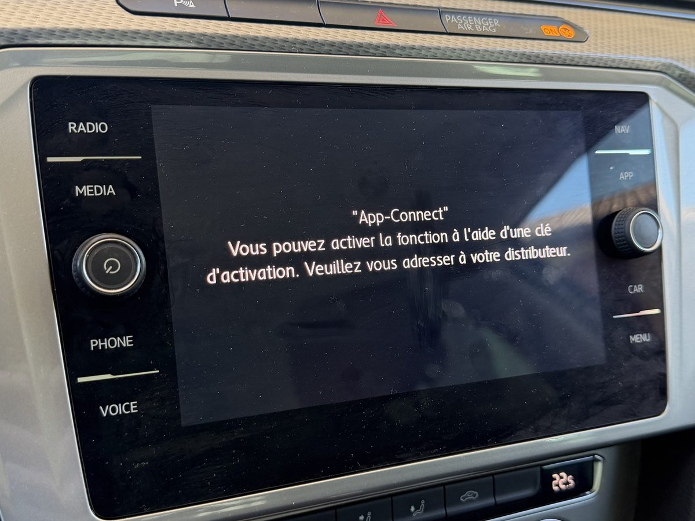
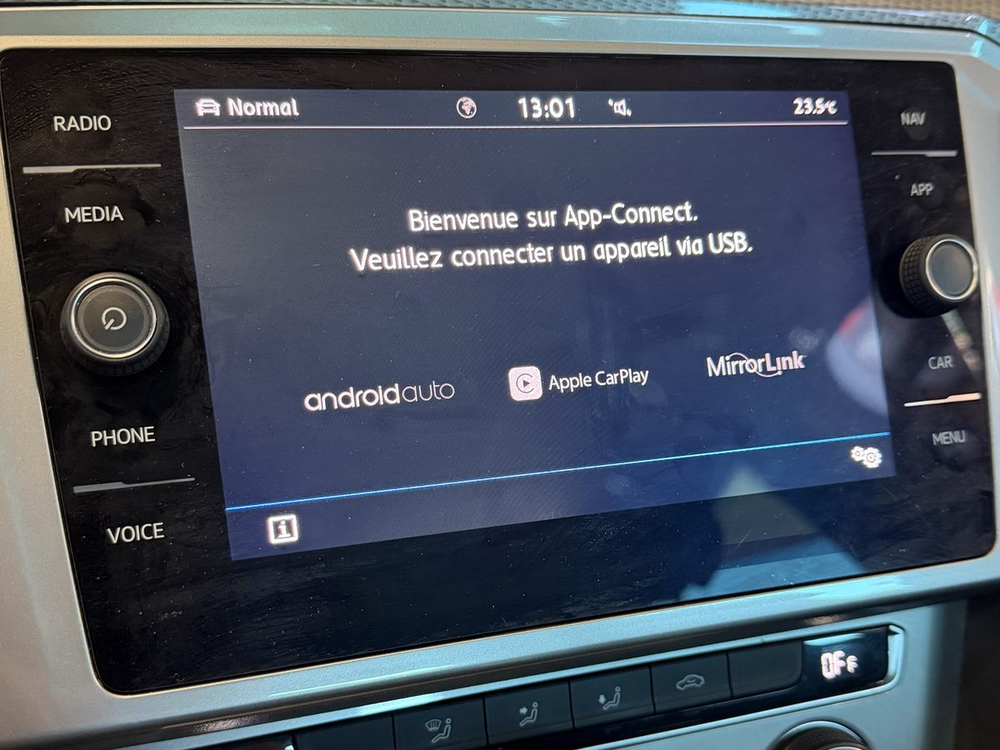
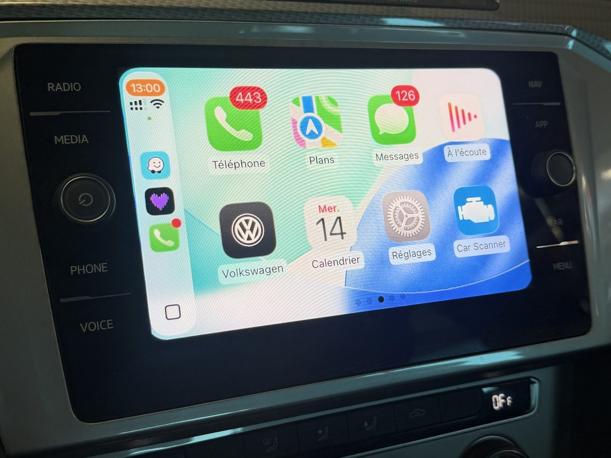
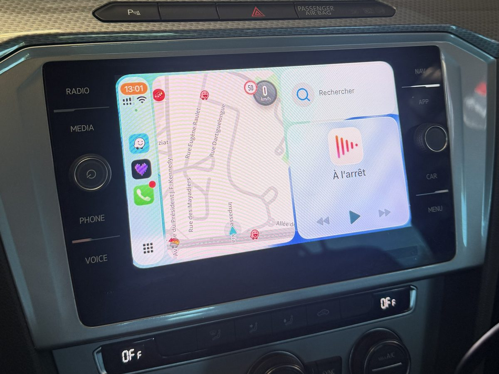

Votre écran affiche « Vous pouvez activer la fonction à l'aide d'une clé d'activation » quand vous branchez votre téléphone ? Votre véhicule a le matériel, mais la fonction n'a pas été activée. Nous débloquons App-Connect officiellement dans l'autoradio : Apple CarPlay et Android Auto sur l'écran d'origine, sans boîtier ni modification.
Sur de nombreux modèles du groupe Volkswagen, l'écran tactile d'origine est capable d'afficher Apple CarPlay et Android Auto. Mais si l'option App-Connect n'a pas été commandée à l'achat du véhicule neuf, la fonction reste bloquée : le système demande une clé d'activation et renvoie vers le distributeur.
Plutôt que d'installer un boîtier ou un écran adaptable, nous activons la fonction d'origine, avec les outils de concession. Le résultat est identique à un véhicule sorti d'usine avec l'option : intégration native, menus du constructeur, aucun élément ajouté.
L'écran Composition Media de cette Passat était livré sans App-Connect : au branchement d'un iPhone, le système affichait seulement « Vous pouvez activer la fonction à l'aide d'une clé d'activation. Veuillez vous adresser à votre distributeur. »
Après une activation d'origine avec les outils de concession, l'écran propose désormais Android Auto, Apple CarPlay et MirrorLink. L'iPhone se connecte en USB et CarPlay s'affiche directement sur l'écran d'origine, avec Waze, Plans, Messages et la musique.




La fonction est débloquée avec les outils de concession, comme si l'option avait été commandée en usine. Pas de logiciel modifié, pas de solution bricolée.
Pas d'interface adaptable cachée derrière l'écran, pas de câblage modifié. L'habitacle reste strictement d'origine.
CarPlay et Android Auto s'affichent dans les menus du constructeur, sur l'écran tactile d'origine, avec le son du véhicule.
Une seule activation pour les deux systèmes : Apple CarPlay pour les iPhone, Android Auto pour les smartphones Android.
Nous contrôlons l'écran et sa version avant toute intervention. Si votre véhicule n'est pas compatible, vous le savez avant de vous déplacer.
Équipé de l'outil officiel ODIS, AREPROG intervient sur les véhicules du groupe Volkswagen avec le même niveau d'accès qu'un concessionnaire.
Envoyez-nous le modèle, l'année et une photo de l'écran. Nous confirmons la compatibilité et vous envoyons un devis sous 24h.
Identification de l'écran et de sa version logicielle, lecture des défauts du système multimédia.
Déblocage de la fonction dans l'autoradio avec les outils de concession.
Branchement de votre iPhone ou Android et vérification de CarPlay / Android Auto avant de vous rendre le véhicule.
App-Connect est la fonction Volkswagen qui permet d'afficher Apple CarPlay et Android Auto sur l'écran d'origine. Sur beaucoup de véhicules, l'écran est compatible mais la fonction n'a pas été achetée en option : au branchement du téléphone, le système demande une clé d'activation. Nous activons cette fonction directement dans l'autoradio.
Oui. L'activation est réalisée avec les outils de concession : la fonction est débloquée officiellement dans l'autoradio, exactement comme si l'option avait été commandée en usine. Aucun boîtier n'est ajouté, aucun câblage n'est modifié.
La plupart des Volkswagen, Seat, Skoda et Cupra équipées d'un écran tactile de génération MIB2 (Composition Media, Discover Media…) peuvent recevoir App-Connect. Si votre écran affiche le message « Vous pouvez activer la fonction à l'aide d'une clé d'activation », votre véhicule est très probablement compatible. Envoyez-nous le modèle, l'année et une photo de l'écran : nous vérifions gratuitement avant toute intervention.
L'activation App-Connect d'origine fonctionne en filaire, via le port USB du véhicule. Il suffit de brancher le téléphone avec son câble pour que CarPlay ou Android Auto démarre automatiquement.
Le tarif dépend du véhicule et de l'écran installé. Contactez-nous avec votre modèle et votre année : nous vous répondons avec un devis gratuit sous 24h.
Activation d'origine avec les outils de concession. Sans boîtier, sans modification. Devis gratuit sous 24h.